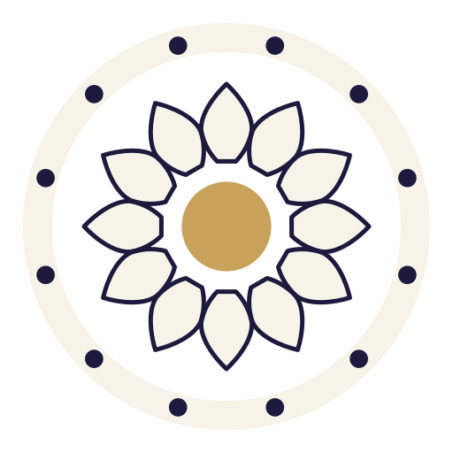
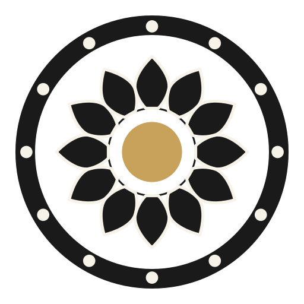
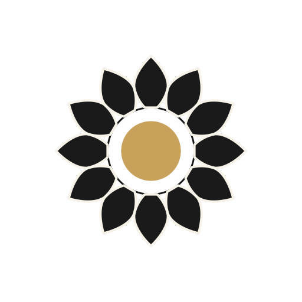
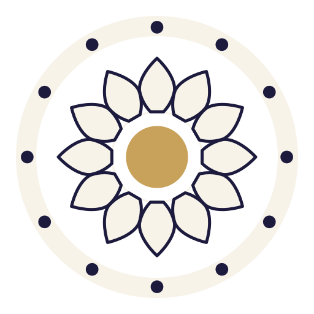
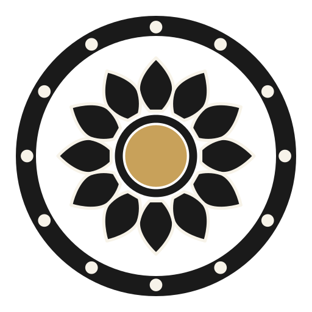
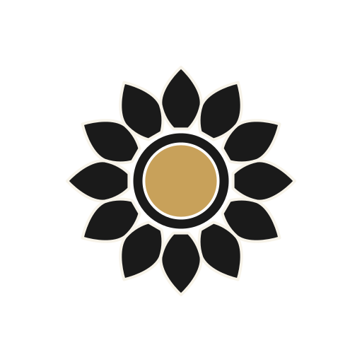
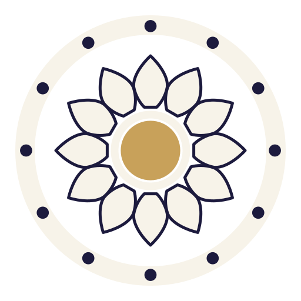

64
AS LOCKED · medallions between tips, hub bare
The anchor — yesterday's mark, unchanged, for calibration.
Your two concerns on the locked mark, isolated. Alignment: the medallions move onto the petal angles, so every petal's ray runs tip-to-sun (the locked offset version leads, dimmed, for comparison). The jaladhari: your inner reading is "shivling and jaladhari" in the heart — the murti seats the Lord in a vessel, and the mark currently shows Him in a void. Three treatments: bare (water by absence), the water-lip (a hairline surfacing between the petal bases), the vessel (solid relief annulus). Each shown as ṛta-chakra · anāhata · night · 64/32.

64
AS LOCKED · medallions between tips, hub bare
The anchor — yesterday's mark, unchanged, for calibration.


 64
64
ALIGNED · bare hub
Your alignment applied: each petal's ray continues across the water into its own Aditya window — the spokes of the wheel complete. The hub stays bare: water read by absence.



ALIGNED · the water-lip
Alignment plus a hairline ring at the jaladhari radius, glimpsed through the twelve gaps between the pinched petal bases — the water surfacing between the petals. Borrows one fine line into the relief register.



ALIGNED · the vessel
Alignment plus the jaladhari as solid relief: a dark annulus in which the gold linga visibly sits — Purusha seated in the vessel, in the lotus, in the cosmos. No hairlines; the register stays pure stone.